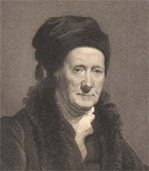
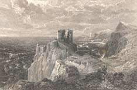

|
|
Home | Corson
Collection | Biography | Works | Image
Collection | Recent
Publications | Correspondence | Forthcoming
Events | Links | E-texts | Contact
John Horsburgh (1791-1869)
John Horsburgh was born
in Prestonpans, East Lothian, on 16 November 1791. He attended
the Trustees' Academy School of Art in Edinburgh, an institution
established in 1760 to teach drawing and design for use
in manufacture. In 1805, he was apprenticed to Robert Scott, landscape
engraver, for whom he continued to work for some time after his
indentures expired. Setting up in his own right, he became known
as both a portrait and landscape engraver. Amongst his most successful
early works (engraved chiefly in line on copper) are contributions
to J.M.W. Turner's Picturesque
Views on the Southern Coast of England (1826). He was to remain
one of Turner's favoured engravers, also contributing to his Picturesque
Views in England and Wales (1825-1838). Turner, however, felt that Horsburgh's
particular gift lay in rendering buildings and interiors, and such
images soon come to predominate over pure landscape in Horsburgh's
production. Another early success, and Horsburgh's first professional
encounter with Scott's work, was an engraving of Sir William Allan's
portrait of
Mackay the Actor in a stage adaptation
of Rob
Roy. Horsburgh's reputation was sufficiently well-established by
1826 that he was elected as a founder member (Associate Engraver)
of the Royal Scottish Academy. Feeling unequal to the task, though,
he resigned after the first meeting and was never re-elected.
| Horsburgh turned to steel engraving in 1829, his first
work in the medium being ‘Ponte Sesto, Rome’ after Samuel
Prout, for Thomas Roscoe’s Tourist in Switzerland (1830).
In the same year he engraved the 1830
portrait of Scott by
Sir John Watson Gordon, which was used as the frontispiece
for the Magnum Opus edition of St.
Ronan's Well (1831). Three other plates by Horsburgh are included
in the Magnum Opus: frontispieces to Quentin
Durward and The
Fair Maid of Perth after Robert Scott Lauder and Thomas Duncan
respectively, and a title vignette for Redgauntlet (click
on the thumbnail, right). |
|

Click on the thumbnail
to see Horsburgh's engraving of the writer Henry
Mackenzie after a portrait by Colvin Smith.
|
|
Horsburgh was subsequently employed as
an engraver on the Cadell editions of Scott's Poetical Works (1833-34)
and Prose
Works (1834-36). For the former, he engraved three title vignettes
after J.M.W. Turner, portraying Bemerside Tower (vol. V), Ashestiel (vol.
VII), and Mayburgh (vol. XI). For the latter, he executed seven
further engravings after Turner, depicting Dryden's Monument,
Westminster Abbey (vignette,
vol. I), Shakespeare's Monument, Stratford Church (vignette,
vol. VI), Napoleon's logement, Quai Conti (vignette, vol.
IX), Milan Cathedral (frontispiece, vol. XIII), Dunfermline (vignette,
vol. XXII), Calais (vignette, vol. XXVII), and Abbeville (vignette,
vol. XXVIII). Also for the Prose Works, he engraved frontispiece
portraits of Dryden after Kneller (vol. I), Swift after Bindon
(vol. II), Smollett
(anon.) ( vol. III), and Henry Mackenzie after Colvin Smith
(vol. IV). In addition, vols III, IV, and XX also carry title
vignettes by Horsburgh after
G. F. Sargent, Sir William Allan, and D.O. Hill respectively. |
| Horsburgh continued to work on Scott-related
assignments throughout his working life. He engraved three
further portraits
of the writer: the Bath Miniature and
the 1808 portrait by
Sir Henry Raeburn for the 2nd edition of Lockhart's Memoirs
of the Life of Sir Walter Scott, Bart. (1839), and Sir Thomas
Lawrence's 1828 portrait for the Royal Gallery of Art (1854).
Nine of the plates in the de luxe Abbotsford Edition of the
Waverley Novels (1842-45) were engraved in steel by Horsburgh.
Seven are
images of buildings: Glasgow Cathedral after Clarkson Stanfield
(vol. III), Fast Castle after the Rev. John. Thomson (vol.
IV), Scalloway Castle after William Collins (vol.VI), Whitehall
after
George Haydock Dodgson and Haddon Hall after William Leighton
Leitch (both vol. VII), the Convent of St. Saba after David
Roberts (vol.
IX), and Windsor Castle after Thomas Creswick (vol. X) |

Click on the thumbnail to see Horsburgh's engraving of
Fast Castle after the Rev. John Thomson |
|
|
More unusually, however, the other two are landscape
engravings, the genre in which Horsburgh was trained but which
is sparsely represented in his published work. Vol. I features
an engraving of Dirk Hatteraick's Cave on the Coast of Galloway
after Clarkson Stanfield to illustrate Guy
Mannering (click on thumbnail, left), and vol. IX an image
of the Solway Firth, again after Stanfield, in illustration of Redgauntlet |
Around 1850, Horsburgh appears to have scaled down his professional
activities to concentrate on his (unpaid) work as a pastor in the
Scottish
Baptist Church. He died on 23 September 1869. The same year saw
the publication of a posthumous edition of his pastoral addresses
prefaced by a short memoir. For more engravings by Horsburgh, search
the Image Database.
Bibliography
- Guy, John C. Edinburgh Engravers, Book of
the Old Edinburgh Club, vol. IX (Edinburgh: Old Edinburgh Club,
1916)
- Hunnisett, Basil. A Dictionary of British Steel Engravers (Leigh-on-Sea:
F. Lewis, 1980)
- Thieme, Ulrich, and Felix Becker (eds). Allgemeines
Lexikon der Bildenden Künstler:
von der Antike bis zur Gegenwart (Leipzig: Seemann, 1907-50)
Back to Index

Last updated: 08-Nov-2004
© Edinburgh University Library |
|